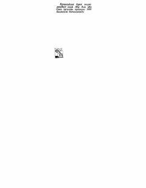

TQAbu Ali ibn Sinoning 'Tib qonunlari' asarining to'rtinchi jildi.
Abu Ali ibn Sinoning mashhur 'Tib qonunlari' asarining 4-jildidir. Ushbu kitobda tibbiyot fanining nazariy va amaliy masalalari, kasalliklarni davolash usullari bayon etilgan.